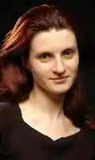
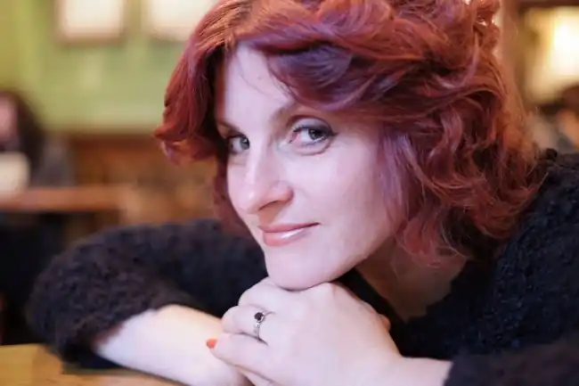
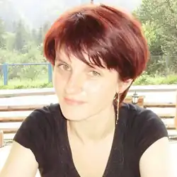

Українська поетеса, прозаїк, перекладач, літературний критик та дослідник літератури. Член Національної спілки письменників України (з 2000 р.), Асоціації українських письменників (з 2000 р.) та Українського ПЕНу (з 2013 р.).
1997 року закінчила філологічний факультет Львівського національного університету ім. Івана Франка.
У студентські роки належала до жіночого літературного угруповання ММЮННА ТУГА (за першими літерами імен: Мар'яна Савка, Маріанна Кіяновська, Юлія Міщенко, Наталка Сняданко, Наталя Томків; ТУГА — "Товариство усамітнених графоманів"). З 2001 по 2005 рік —— координатор Львівського осередку Асоціації українських письменників. У січні 1999 року була учасницею акції "Січ Уяздовська" (Варшава). У 2003 р. та 2008 р. стипендіат програми Міністра культури Польщі "Gaude Polonia". Лауреат кількох міжнародних поетичних фестивалів, у т. ч. —— Міжнародного фестивалю у Віленіці (Словенія) —— CEI Fellowship-2007, Міжнародного фестивалю "Київські Лаври" (2012) та ін. З 2011 року є засновницею та директором незалежної літературної премії "Великий Їжак", якою відзначаються автори найкращих сучасних україномовних книжок для дітей. Основною метою цього визначного й безпрецедентного для України, українського дитячого письменництва, книговидавництва й літератури в цілому, проекту — є популяризація якісної друкованої книги серед дітей та підлітків й формування європейської читацької порядності та свідомості, серед засилля піратських копій та оцифровок, та передусім —— підвищення культури читання серед молодих українців до належного та справедливого рівня ознаки престижу й високого соціального статусу. Твори Кіяновської перекладалися англійською, німецькою, італійською, шведською, азербайджанською, грузинською, польською, сербською, чеською, словацькою, словенською, литовською, білоруською та російською мовами, івритом. Як поет і прозаїк є учасницею численних антологій. Переклади публікує у періодичних виданнях, в антологіях та окремими книгами. Нагороджена Почесним знаком "За заслуги перед польською культурою" (2014). "373" визнано Книжкою року в номінації "Поезія" XVI Всеукраїнського рейтинґу "Книжка року 2014"; "ДО ЕР" визнано Книжкою року в номінації "Поезія" в Рейтинговій акції творчих спілок "Книжка року-2014". Живе у м. Львів. Авторка поетичних збірок: Інкарнація, Вінки сонетів, Міфотворення, Кохання і війна, Книга Адама, Звичайна мова, Дещо щоденне, ДО ЕР (вибране), 373 (вибране). Авторка прозової книжки: Стежка вздовж ріки.